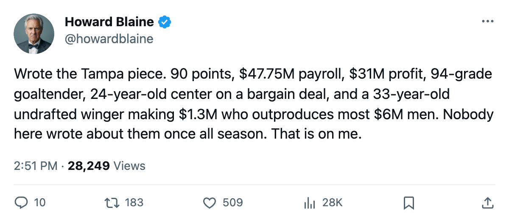
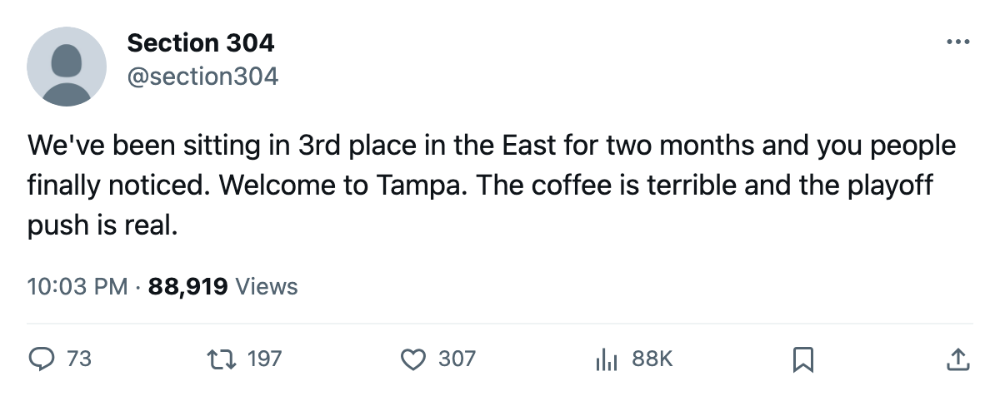

TB
TB WSH
WSH NJ
NJ NYI
NYIThe Quiet 90: Tampa Bay is 2nd in the East on cost per point, 3rd in the league in profit, and 12 days from deciding what Martin St. Louis is worth
The Lightning are 35-19-6 on a $47.75M payroll, made $31.49M last season without a playoff game, and have a 33-year-old undrafted right winger carrying 97 points on a contract that expires in the summer
 Howard BlaineSenior writer, The Blaine Rankings · The Hockey Gazette
Howard BlaineSenior writer, The Blaine Rankings · The Hockey Gazette
The piece
Tampa Bay sits 3rd in the Eastern Conference with 90 points, 5 clear of Washington, on a payroll of $47.75M. The Lightning cost $0.53M per point, behind only New Jersey's $0.48M among East clubs, and their $31.49M profit last season ranked 3rd in hockey behind the Devils and Minnesota. No club in this league is running a better operation at this price. The desk has not written a word about them all season, and that is an oversight.
The standings say Tampa is 1st in the Southeast at 35-19-6, 5 points ahead of Washington with 15 games left. The Lightning have 2 divisional meetings remaining and face  Colorado Avalanche for the first time tonight, which is the 7th time this season two of the league's top 10 clubs have met only once by March 7. Tampa scored 30 and allowed 23 in its last 10 (7 wins, 2 overtime losses, 1 regulation loss) and sits +27 on the season.
Colorado Avalanche for the first time tonight, which is the 7th time this season two of the league's top 10 clubs have met only once by March 7. Tampa scored 30 and allowed 23 in its last 10 (7 wins, 2 overtime losses, 1 regulation loss) and sits +27 on the season.
The construction comes down to two players and the money they carry.  Vincent Lecavalier90 is 24, has 105 points in 59 games, and carries a pace of 146 over 82. His salary is $2.60M with 2 years left on the deal.
Vincent Lecavalier90 is 24, has 105 points in 59 games, and carries a pace of 146 over 82. His salary is $2.60M with 2 years left on the deal.  Nikolai Khabibulin92 has started 56 games, won 34, posted a 2.74 GAA and carries a 94 overall grade. His contract runs 3 more years at $3.80M.
Nikolai Khabibulin92 has started 56 games, won 34, posted a 2.74 GAA and carries a 94 overall grade. His contract runs 3 more years at $3.80M.
The man at the periphery is the problem.  Martin St. Louis87 is 33, undrafted, and has 97 points in 67 games on a $1.30M salary with no year left. He has been the league's most undervalued contract for three seasons running. The Lightning are 12 days from what the calendar has as the trade deadline, and the arithmetic of an expiring 97-point winger on a 3rd-place club is the question that decides the summer.
Martin St. Louis87 is 33, undrafted, and has 97 points in 67 games on a $1.30M salary with no year left. He has been the league's most undervalued contract for three seasons running. The Lightning are 12 days from what the calendar has as the trade deadline, and the arithmetic of an expiring 97-point winger on a 3rd-place club is the question that decides the summer.
The business underneath the points
Tampa drew 16,192 a night at $79, grossed $76.51M in revenue, and cleared $31.49M in profit last season while finishing outside the playoff field entirely. The club's run column reads 0 for last spring: no games, no series, no bracket. The Lightning missed the postseason and made more money than 16 clubs that played in it, which is the arithmetic of a $47.75M payroll in a market that fills 16,192 seats at $79 a head.
This season they are doing it again at a higher level. The $0.53M per point trails only New Jersey's $0.48M in the East, and New Jersey's roster construction is one goaltender and a league-worst 218 goals scored. Tampa's 229 goals rank 5th in the conference. They are winning on offense, on a young center's contract year, on a goaltender at 94, and on a 33-year-old making $1.30M who produces like a top-15 forward.
What the deadline asks
The Lightning have 2 games left inside the Southeast Division. Their divisional record is 9 wins, 3 overtime wins, 3 losses and 3 overtime losses in 18 games, a .694 point percentage against divisional opponents. They are 4-0-0 against Atlanta, 2-0-1 against Florida, 1-1-1 with 2 overtime games against Carolina, and 2-2-1 with 1 overtime game against Washington. The division is decided by the 2 remaining games, and if those are against the Capitals and one other club, the margin is 5 points and Tampa holds the schedule.
Steve Yzerman and the front office have 12 days before the deadline. St. Louis is 33. He has 97 points on a contract that expires in the summer. He will be 34 in June, and his pace is 119 points per 82. The Lightning have 15 games left and 2 divisional meetings. They are 3rd in the East, 11 points out of 1st (Toronto holds 108 with 14 to play), and 22 points ahead of the 8th spot held by the Islanders.
A club 22 points clear of the playoff line with 15 games left does not need to sell. A club 18 points behind 1st with 15 games left does not need to buy. Tampa is neither: safe from the bottom and too far from the top to panic. The question is whether St. Louis's contract year produces a trade or a re-signing, and what $1.30M buys in a league where the average cost per point across all 30 clubs sits near $0.70M.
The desk will log the prediction: Tampa Bay trades St. Louis before the deadline and finishes the season with a better goal differential than its current +27, because a swap at the deadline for a younger piece at a similar cap hit improves a 33-year-old's replacement cost.
Tonight, the Lightning meet Colorado for the first time. The Avalanche are 35-20-5, 87 points, 4th in the West. The first meeting between the 3rd club in the East and the 3rd club in the West, in the 74th week of the season, is the kind of scheduling accident that tells you the league's schedule was built by someone who liked the suspense.

